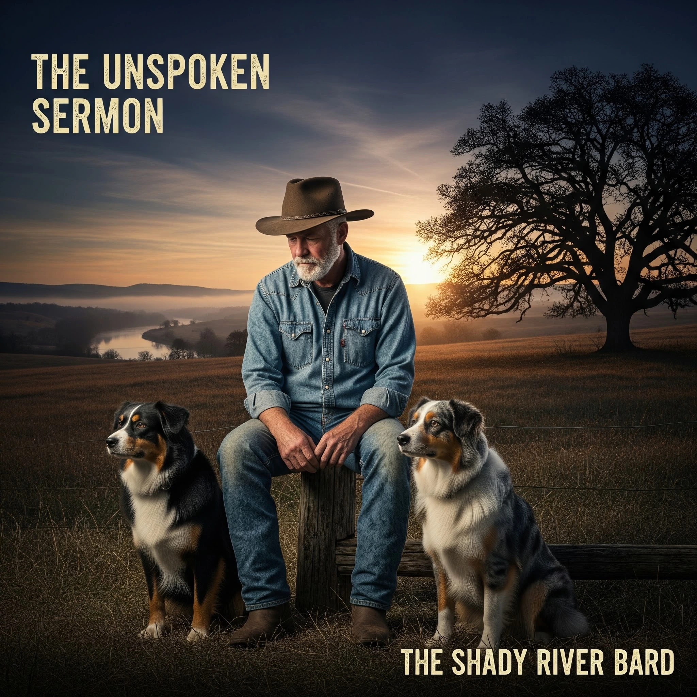

The Unspoken Sermon
An intimate and provocative 8-track concept album examining the core parables of Jesus through the lens of modern rural and civic life. Using an organic, porch-side Americana sound to deliver a prophetic payload, it unmasks the golden steeples of commercialized religion, drops the stones of self-righteous wrath, and takes the lowest seat at the banquet of grace.
Interactive Parables Jukebox
Listen to all 8 master recordings, explore their scriptural roots, and read the transcribed literary poetry.
1. The Invocation
Moral Role & Theological Meaning
Literary Lyrics
The "Trojan Horse" Theological Matrix
How narrative transportation, ambiguous parables, and pastoral Americana bypass ideological skepticism to awaken radical mercy.
| Strategic Dimension | Narrative & Trojan Strategy | Moral Foundation | Redemptive Outcome |
|---|
Curated Visual Exhibits
Widescreen artistic visual exhibits illustrating the quiet porch, the Jericho Road, the golden steeple, and the banquet of the lowly.